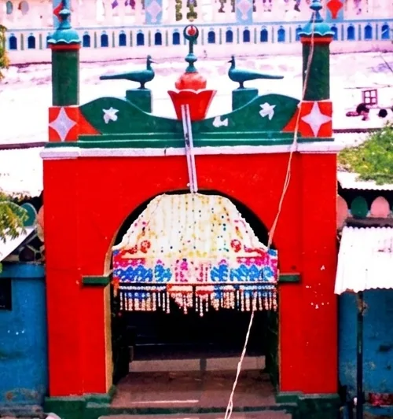
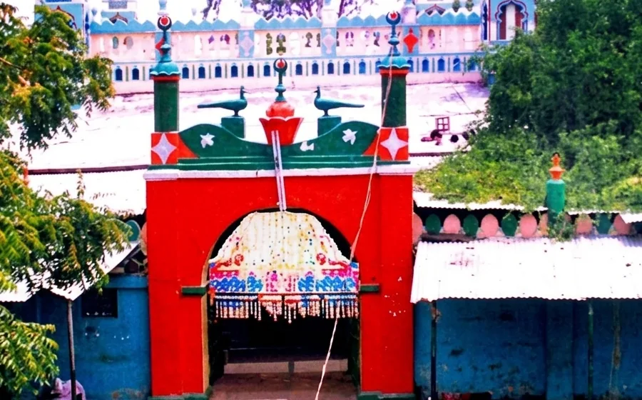
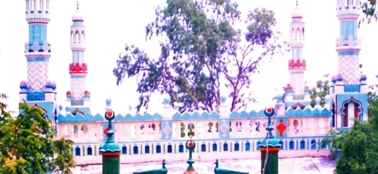
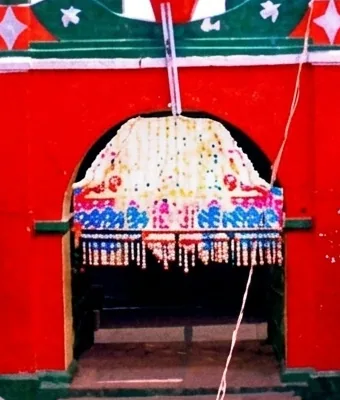
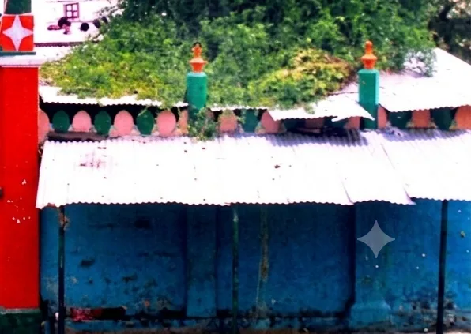
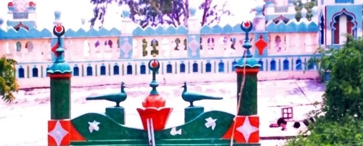

The saint began his journey in Bijapur, the Deccan sultanate country that shaped the region's Sufi traditions.
Welcome to
Scroll
Hazrat Khwaja Syed Shah Sufi Sarmasth Hussaini Chishty Al Quadri (R.A)
A place of faith, peace, devotion and service — at D. Honnur, Anantapur district, Andhra Pradesh.
- Open every day for ziyarat
- Bommanahal Mandal, Anantapur district
- English · اردو · हिन्दी

About the Dargah
Bijapur
The Deccan
Honnur
Chishti
Qadri
A shrine of the Deccan
Dargah Honnur is the revered shrine of Hazrat Khwaja Syed Shah Sufi Sarmasth Hussaini Chishty Al Quadri (R.A), who carried the teachings of the Chishti and Qadri orders through the Deccan. Pilgrims travel from across Anantapur district and neighbouring Karnataka — especially the Bellary region — to seek peace, attend qawwali gatherings and offer dua.
A dargah is the tomb-shrine of a Sufi saint, and for centuries it has served the people around it as much as the pilgrims who travel to it. Visitors come to offer fatiha, tie a thread of intention, listen to qawwali and share in langar. The doors are open to everyone, of every faith — that openness is the oldest custom of the Deccan shrines.
He travelled through the Deccan carrying the teachings of the Chishti and Qadri silsilas, gathering followers along the way.
He chose Honnur for his final years, and the dargah built over his grave remains open to pilgrims every day.
The two silsilas
Brought to the subcontinent by Khwaja Moinuddin Chishti of Ajmer, the Chishti order is known for love of God expressed through service to people, for sama — devotional music — and for accepting all who come, without distinction of creed or caste.
The Qadri order traces itself to Shaikh Abdul Qadir Jilani of Baghdad. It holds to the sharia alongside the inner path, and reached the Deccan through scholars and travellers who settled across the sultanates.
Reading the name
- Khwaja
- A title of respect for a Sufi master and teacher.
- Syed
- A descendant of the family of the Prophet Muhammad ﷺ.
- Sarmasth
- One absorbed in divine love — a title given to those lost in the remembrance of God.
- Hussaini
- Of the line of Imam Hussain, grandson of the Prophet ﷺ.
- Chishty Al Quadri
- The two Sufi orders whose teachings he carried and passed on.
- (R.A)
- Short for Radi Allahu Anhu — “may God be pleased with him”.
Important Announcement
View All
Urs & Events
Upcoming Events & Urs
Urs and event dates are announced at the dargah. Please contact the dargah for the current schedule.
What happens at an Urs
An urs marks the anniversary of a saint’s passing — remembered not as a death but as a union with the Divine. The observances below are those kept at Chishti and Qadri shrines across the Deccan. Dates for Honnur are announced at the dargah itself.
Sandalwood paste is ceremonially applied to the tomb, opening the days of the urs.
Pilgrims offer a chadar — an embroidered cloth — along with flowers and incense at the tomb.
Devotional singing continues late into the night — the Chishti way of turning the heart towards God.
Food is cooked and shared with everyone present, and fatiha is recited for the saint and for the departed.
Prayer
Prayer Timings
The five daily prayers are observed from Fajr to Isha. Exact timings shift through the year and are announced at the dargah — please confirm locally before travelling.
The five daily prayers
Before sunrise, in the first light of dawn.
After the sun passes its highest point at midday.
In the late afternoon, before the light begins to fade.
Just after the sun has set.
At night, once the last of the twilight has gone.
On Friday the midday prayer is replaced by Jumu‘ah, prayed in congregation. Thursday evening — the eve of Jumu‘ah — is traditionally the busiest time for ziyarat at a dargah.
Services
Our Services
Availability varies — please confirm with the dargah office before you travel.
Alms and help gathered for those who come in need.
A shared meal cooked at the dargah and offered to every visitor alike.
Simple lodging for pilgrims travelling from a distance.
Khidmat — hands are welcome at langar, at the gate and during the urs.
Names and intentions carried to the shrine so that dua may be offered.
Ask at the dargah office for directions, timings or anything you need.
Gallery
Photo Gallery
Views of the shrine at Honnur. More photographs will be added.





Visiting
Visitor Information
D. Honnur, Bommanahal Mandal, Anantapur District, Andhra Pradesh 515812.
Open all day for ziyarat, every day of the year.
Please ask at the dargah office on arrival.
Dress modestly, remove footwear before entering, and keep the shrine quiet during prayers.
Nearest facilities are in Bommanahal. Ask at the office for assistance.
A contact number will be published once confirmed by the dargah.
The dargah is reached by road through Bommanahal. Bus and share-auto routes change with the season — ask locally, or at the office, for the current connection.
Modest clothing covering the shoulders and knees. Women are asked to cover the head inside the shrine; a scarf is enough.
Photographs of the buildings are welcome. Please do not photograph people at prayer, and put the phone away inside the tomb chamber.
Your ziyarat, step by step
- Footwear at the door
Remove your shoes at the entrance; a place is kept for them. Wash the hands and face if you can.
- Salaam and fatiha
Face the tomb, offer salaam, and recite fatiha quietly. There is no fixed form — the intention is what matters.
- Chadar and flowers
Many pilgrims offer a chadar, flowers or incense. Ask at the dargah where these may be obtained.
- Sit a while
Stay for the qawwali if there is any, and share in the langar. Nobody is turned away, and nothing is asked of you.
Notices
Latest Updates
Notices from the dargah appear here — urs announcements, changes to timings, and news of repairs or building work. Nothing is posted unless the dargah sends it.
No notices at present. Announcements from the dargah will appear here.
Contact
Contact Us
What you can ask about
Prayer timings for the day, the best hours to come, and access for elderly or disabled pilgrims.
The dates of the annual urs, the qawwali programme, and arrangements during the days of the gathering.
Meals, lodging for those travelling far, and how to offer your time as a volunteer.
- Address
- D. Honnur, Bommanahal Mandal, Anantapur District, Andhra Pradesh 515812
- Phone
- Being confirmed by the dargah.
- Being confirmed by the dargah.